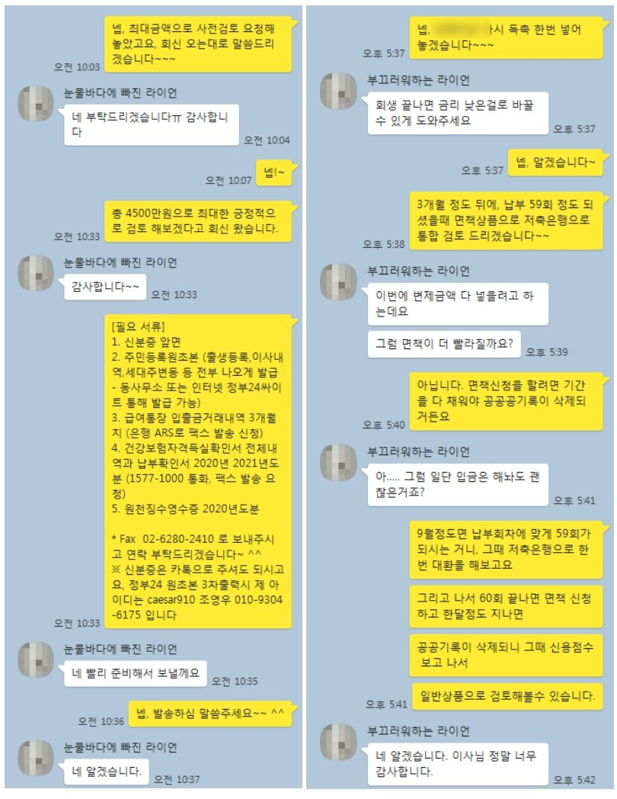

개인회생 중 직장인 조건 4500만원 신용대출 승인 사례
안녕하십니까? 뱅크앤론 조영우 이사입니다~
오늘은 개인회생중 신용대출로 4500만원 진행드린 사례에 대하여 공유 드리겠습니다~
해당 고객님의 대략적인 프로필은 아래와 같습니다.
- 40대 여성 고객
- 직장인 / 4대가입 / 15년 근무중 / 연봉 5000만원
- 기대출 없음
개인회생 총 60회중 55회차, 변제금미납이 2회 있으셨고. 회생 이후 보유한 대출은 없으셔서, 어느 정도 금액은 진행 가능하셨지만, 고객님의 최소 필요자금이 개인회생 중에는 다소 고액인 4천만원 이상이었습니다.
이에 저희와 업무협약된 금융사로 협의한 결과, 최종 4500으로 승인되어 필요자금 전액 해결하실수 있게 되었습니다.
아래는 고객님과 나눈 실제 대화내용입니다. 참고 부탁 드리겠습니다~
